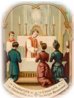
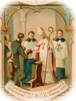

The first of the seven sacraments, and the "door" which gives access to the other sacraments. Baptism is the first and chief sacrament of forgiveness of sins because it unites us with Christ, who died for our sins and rose for our justification.
Baptism, confirmation and Eucharist constitute the "sacraments of initiation" by which a believer receives the remission of original and personal sin, begins a new life in Christ and the Holy Spirit, and is incorporated into the Church, the Body of Christ.
The rite of Baptism consists in immersing the candidate in water, or pouring water on the head, while pronouncing the invocation of the Most Holy Trinity: the Father, the Son, and the Holy Spirit.
 The Eucharist is the Body and Blood, Soul and Divinity of our Lord Jesus Christ under the appearance of bread and wine.
"The Holy Eucharist completes Christian initiation. Those who have beend raised to the dignity of the royal priesthood by Baptism and configured more deeply to Christ by Confirmation participate with the whole community in the Lord's own sacrifice by means of the Eucharist."
"The Eucharist is the 'source and summit of the Christian life.' The other sacraments, and indeed all ecclesial ministries and works of the apostolate, are bound up with the Eucharist and are oriented toward it. For in the blessed Eucharist is contained the whole spiritual good of the Church, namely Christ himself, our Pasch."
(CCC 1324-5)
 One of the ensemble of the Sacaraments of Initiation into the Church, together with Baptism and Eucharist. Confirmation completes the grace of Baptism by a special outpouring of the gifts of the Holy Spirit, which seal or "confirm" the baptized in union with Christ and equip them for active participation in the worship and apostolic life of the Church.
"It must be explained to the faithful that the reception of the sacrament of Confirmation is necessary for the completion of baptismal grace. For 'by the sacrament of Confirmation, [the baptized] are more perfectly bound to the Church and are enriched with a special strength of the Holy Spirit. Hence, they are, as true witnesses of Christ, more strictly obligated to spread and defend the faith by word and deed.'" (CCC 1285)